Angular
Az oldal tartalma
- CLI kódok
- Bevezetés
- Alapok - komponensek
- Alapok - databinding
- Alapok - directives
- Alapok - kiegészítések
- Alapok - Course Project rövid összefoglaló
- Components & databinding deep dive
- Komponensek - Course Project rövid összefoglaló
- Directives deep dive
- Services & Dependency Injection
- Routing
- Routing összefoglaló
CLI kódok
Bevezetés
Telepítés: npm install -g @angular/cli@latest
Új projekt készítése: ng new {fájlnév}
Szerver futtatása a mappán belül: ng serve
App futtatása: általában localhost:4200
fájl/src/app/ mappában találhatóak a nekünk szükséges fájlok
app.component.html-ben található a html fájl, amit tudunk szerkesztgetni
app.component.css-ben a stílust tudjuk megadni
app.component.ts-ben pedig kezdetben meg van adva a Component (ez exportálva van). Itt tudunk létrehozni komponenseket.
Ha azt szeretnénk, hogy egy input text mezőben lévő szöveg dinamikusan változzon a honlapon, akkor a következőt kell megadni:
<input type="text" [(ngModel)]="name">
Ehhez viszont két dolgot kell megadni:
- Az app.component.ts fájlban az AppComponentnél definiálni kell a name változót
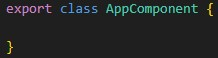 - Az app.module.ts-ben importálni kell a FormsModulet, ugyanis az ngModel TS alapú, amit fel kell ismernie az Angularnak: import { FormsModule } from '@angular/forms'
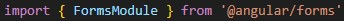 - Ezután az @NgModule-on belül az importhoz hozzá kell írni a FormsModulet.

Projekten belül adjuk hozzá a bootstrapet: npm install --save bootstrap
A projekten belül található angular.json-ben keressük meg a stylest. Itt adjuk meg a "src/styles.css" mellett azt, hogy "node_modules/bootstrap/dist/css/bootstrap.min.css"
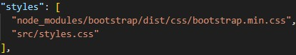
Alapok - komponensek
- Az app mappában található app.component.ts-ben kell megadni a komponenseket.
- Ezek az app.moduleban található bootstrap: [AppComponent] segítségével kiolvasásra kerülnek, amit később az Angular már tud értelmezni.
- Az értelmezéshez importálni kell az AppModule-t a main.ts fájlban.
- Így, az index.html-ben található app-root tag is értelmezésre kerül, holott ez nem egy standard HTML tag.
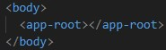
A komponensek célja az, hogy a weboldalunkat több különböző komponensre bontsuk szét, amelyek önálló templatetel rendelkeznek. Ezáltal a különböző komponensek újrafelhasználhatóak lehetnek, valamint mivel külön templatetel rendelkeznek, így sokkal átláthatóbbá tudjuk tenni a projektet, ami, különösen a komplex weboldalak esetén, igencsak fontos!
Komponensek készítése (manuálisan):
- Készítsünk egy új mappát az app mappán belül. Azért az app mappán belül, mert egy Angular projektben a lényegi információk az app mappában találhatóak.
- A mappát célszerű úgy elnevezni, mint a komponenst.
- Hozzuk létre a mappán belül a {komponens név}.component.ts fájlt.
- A TS fájlban adjuk meg ezt, természetesen a megfelelő komponensnév felhasználásával:
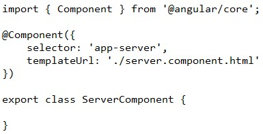 - Az app.module.ts fájlban adjuk hozzá a declarations-höz az új componensünket, amit feljebb megadtunk. Ahhoz, hogy ez valid legyen, importálni kell az osztályt: import { ServerComponent } from './server/server.component';
CLI-jal komponens generálása: ng generate component {komponens neve} vagy ng g c {komponens neve}
Ha nem az app, hanem más mappába szeretnénk létrehozni a komponenst, akkor útvonalat kell megadni: ng g c útvonal/{komponens neve}
Ha a selectornál nem simán adjuk meg a nevet, hanem kapcsos zárójelek között (pl. '[app-servers]'), akkor úgy adtunk meg, hogy az egy element. Ilyenkor csak akkor tudjuk használni a komponenst, ha úgy adjuk meg, hogy:
<div app-servers></div>
Ha pedig pontot teszünk a név elé (pl. '.app-servers'), akkor osztályként tekintünk rá. Ahhoz, hogy használni tudjuk a komponenst, a következőt kell megadni:
<div class="app-servers"></div>
Alapok - Databinding
1. String interpolation
Adjuk meg export class ...Componentnél azokat a komponenseket, amiket dinamikusan szeretnénk kiíratni.
Ezután a html fájlban {{ }} között adjuk meg a komponens nevét.
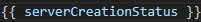
Vagy a {{ }} jelek közé megadhatunk stringet is akár. A lényeg, hogy különböző blokkokat, mint pl elágazás, nem adhatunk meg!
De akár definiálhatunk metódust is az osztályon belül,
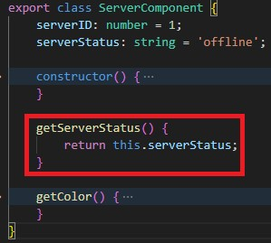
amit fel tudunk használni dinamikusan:
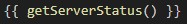
2. Property binding
Különböző HTML elemek propertyjét tudjuk dinamikusan változtatni vele, mint például a button disabled propertyjét. Ehhez az angular OnInit könyvtárát kell importálni és használni. A propertyket, amikre szeretnénk hatással lenni, [] közé kell tenni és értéket kell neki adni "" közé, ami lehet változónév vagy konkrét érték.
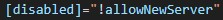
Használjunk string interpolationt, ha az outputot szeretnénk dinamikusan változtatni és property bindingot, ha HTML elemek propertyjét szeretnénk.
3. Event listener
Normál esetben, ha azt szeretnénk, hogy kattintásra történjen valami, akkor az onclick-et kell megadni. Angularban viszont ennél egyszerűbb módszert tudunk használni: ({event}) = "{metódus/függvény}".
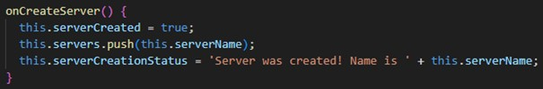
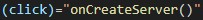
$event - akkor kell, ha szeretnénk megkapni azokat az adatokat, amik az event során keletkeznek vagy változnak.
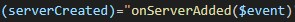
4. Two-way binding
A two-way binding esetében a komponensek a különböző evenetek hatására dinamikusan változtatják meg értékeiket. Ehhez kell használni a fent említett [(ngModel)]-t.
A lényegi különbség a two-way binding és az event listener között az, hogyha az event listenernél történik értékváltoztatás, akkor a two-way binding is képes átvenni az adott értéket, viszont ez fordítva nem igaz: ha például olyan input mezőben változtatunk meg értéket, ahol two-way binding van, akkor az event listener mezőjében nem lesz semmilyen változás.
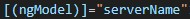
A használatához ne felejtsük el az app.module.ts fájlban megadni a FormsModule-t. Bővebben lásd: bevezetés.
Alapok - directives
A directivek olyan osztályok, amik újabb viselkedést adnak HTML elemekhez.
Built-in directivek:
- * - struktúrális directive - módosítja a DOM-ot.
- [] - property binding
1. *ngIf - elágazás, akkor célszerű használni, ha valamit ki szeretnénk dinamikusan iratni vagy sem
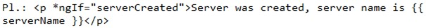
2. Else ág: else ágat az alábbiak szerint tudunk megadni ngIf-fel:
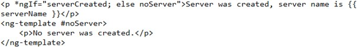
Itt a #noServerrel megjelöljük azt a részt, amit meg szeretnénk adni az else ágban.
3. [ngStyle] - dinamikusan tudunk stílust megadni, a CSS propertyket camelCaseként kell megadni
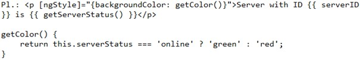
A CSS propertyket megadhatjuk camelCase-szel vagy idézőjelek között is.
4. [ngClass] = CSS osztályok dinamikus hozzáadása és elvétele
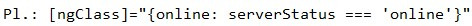
5. *ngFor - listák kiíratása
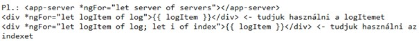
Általánosan: var/let/const + egy random név + of + a tömbünk.
Toggling: (click)="showSecret = !showSecret"
Alapok - kiegészítések
<komponens>.model.ts -> osztályok létrehozására szolgál
Alapok - Course Project rövid összefoglaló
- Tervezzük meg az applikációt, gondoljuk át, hogy milyen feature-öket, komponenseket és modelleket szeretnénk használni. Ezeket a későbbiekben is lehet módosítani, illetve bővíteni! A modellek alatt azt értjük, amikor valamit gyakran használjuk és a jellemzőik megegyeznek. Vagyis tulajdonképpen létrehozunk egy osztályt modell címszó alatt.
- Tervezzük meg azt, hogy milyen hiearchiában szerepelnek a komponensek és az alapján hozzuk létre az összes komponenst CLI-val az ng g c {komponens} paranccsal. Ha kell, adjunk meg útvonalat is.
- Tervezzük meg, hogy az egyes komponensek hogyan helyezkedjenek el a honlapon. Gondoljuk át, hogy minek mekkora helyet kell foglalnia és alakítsuk ki az összes komponens elhelyezkedését. Közben teszteljük azt tesztadatokkal, hogy valóban megfelel-e a várakozásnak az elrendezés.
- Célszerű a headerrel kezdeni (ha van), mert az az egyik legegyszerűbb. Utána sorban következik a többi komponens. Ne felejtsük el, hogy ahhoz, hogy megjelenjen egy komponens a weboldalon, használni kell a komponenshez tartozó taget (pl app-recipes)!
- Ahol kell, ott hozzunk létre modelleket és azon belül is osztályokat, ehhez az export class kifejezést kell használni. Ezeknél az osztályoknál adjuk meg a jellemzőket típusozva és a constructor() metódusban inicializáljuk az adatokat (ne felejtsük el, hogy this-t kell használni!). Ott, ahol a későbbiekben használjuk az osztályokat, ott be is kell importálni azt, illetve egy tömböt is létre kell hozni, amelynek a típusa az az osztály lesz, amit létrehoztunk (+ []). Új objektumot a new {class}() segítségével tudunk létrehozni, ahol a zárójelen belül annyi értéket kell megadni (a típusoknak megfelelően), ahány jellemzője van az adott osztálynak. Ha nem teljesül, hibaüzenetet kapunk.
- A komponenseket úgy építsük fel, hogy ahol tömböt használunk és dinamikusan íratnánk ki az adatokat, ott
- megfelelően lehessen használni az *ngFor-t és
- megfelelő helyre be is tudjuk illeszteni az adatot string interpolationnal vagy property bindinggal. Mivel objektumokat használunk, így az objektum jellemzőjére tudunk hivatkozni.
- Általánosan: alakítsuk ki az összes komponenst, amit létrehoztunk, finomhangolni később is lehet. Ami a legfontosabb, hogy a hiearchiára ügyelni kell!
Components & databinding deep dive
Dokumentáció (input-output): [Angular]
Input
Nagyon fontos, hogy a komponensek propertyjei alapesetben csak az adott komponensben érhetőek el! Ahhoz, hogy egy propertyt elérhessünk a szülő komponensben, a property elé meg kell adni a @Input() decoratort és ezt az Inputot importálni kell a @angular/coreból! A zárójelek közé az aliast kell írni, hogy milyen néven szeretnénk azt a propertyt használni a komponensen kívül. Ebben az esetben a szülő komponenstől áramlik az adat a gyerek komponens felé.
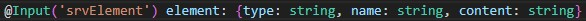
Az adatokat property bindinggal tudjuk továbbítani. Például: [number]="oddNumber", ahol number az a property, ami a gyerek komponensben is szerepel.
Output
Ahhoz, hogy egy szülő komponensben végrehajtódjon egy folyamat, például tömbhöz hozzáadás, különböző eventeket kell létrehozni. Ezeket az eventeket hasonló nevű metódusokhoz kapcsoljuk a szülő komponensben, mint ahogy a gyerek komponensben is tettük (pl. (serverCreated)="onServerAdded($event)").
A metódusnál zárójelben egy olyan objektumot kell megadnunk, ami tartalmazza az összes olyan propertyt, amit át szeretnénk venni a gyerek komponenstől. Ezután a gyerek komponensben, az event nevének megfelelő propertyket hozunk létre, melyhez a new EventEmitter<> értéket rendeljük. Ennek segítségével tud bekövetkezni az az event, amit szeretnénk.
A <>-n belül azt az objektumot kell megadni, amit a szülő komponens megfelelő metódusaiban is megadtunk.
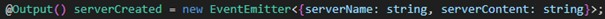
Ezután az osztály megfelelő metódusain belül meghívjuk az emit metódust méghozzá úgy, hogyha mondjuk az event neve serverCreated, akkor a metóduson belül ezt kell megadni: this.serverCreated.emit({}). Ezután, mivel a gyerek komponensből küldünk adatokat a szülő komponens felé, @Output()-t kell az eventek neve elé írni és ezt is importálni kell a @angular/coreból! Hasonlóan a () belül meg tudunk adni egy aliast.
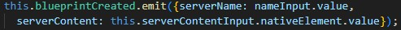
Ez utóbbira példa lépésről lépésre:
- A szülő komponensben a gyerek komponenshez tartozó "HTML" tagben adjuk meg az eventet, például ezt: (serverCreated)="onServerAdded($event)". A gyerek komponensben a hasonló nevű metódus az onAddServer nevet viseli.
- A komponens TS fájljában definiáljuk ezt a metódust és a zárójelben egy olyan objektumot adjunk meg, amilyen értékeket szeretnénk átvenni a gyerek komponenstől.
onServerAdded(serverData: {serverName: string, serverContent: string}) - A gyerek komponensben, az event nevének megfelelően hozzunk létre egy olyan objektumot, amely az Angularos EventEmitter osztály objektuma lesz.
serverCreated = new EventEmitter<>. - A <> közé illesszük a szülő komponensben az eventhez tartozó metódusnál megadott objektumot.
<{serverName: string, serverContent: string}> - A gyerek komponensben olyan metódust adjunk meg, aminél az EventEmitter emit metódusát alkalmazzuk.
this.serverCreated.emit({serverName: this.newServerName, serverContent: this.newServerContent})
Ahogy látható, a ()-ben az az objektum van, amit a 4. pontban is megadtunk. - Tegyünk @Output()-t az event neve elé, ugyanis a gyerek komponensből küldünk adatokat a szülő komponens felé @Output() serverCreated
Összefoglalva: Hozzunk létre custom eventeket a szülő komponensben, amit EventEmitterrel definiálunk a gyerek komponensben. Ez lesz az Output, mivel az adatok a gyerek komponenstől kifelé áramlanak. Ha pedig adatot szeretnénk továbbítani a szülőtől a gyerek felé, akkor hozzunk létre custom propertyt, és ezt a gyerek komponensben Inputtal definiáljuk!
View Encapsulation
Az Angular a különböző komponensekben található elemeket különböző, az adott komponensre jellemző osztályokkal látja el, amelynek segítségével tényleg csak az adott komponens stílusát tudjuk változtatni. Amennyiben ezen változtatni szeretnénk, úgy a @Component-en belül meg kell adni azt, hogy
encapsulation: ViewEncapsulation.{valami}.
A {valami} lehet:
- Emulated - ez a default
- None - ekkor kikapcsoljuk a View Encapsulationt az adott komponensre. Ha ezen komponensen belül adunk meg stílust a CSS fájlban, az globálisan minden komponensre használódni fog.
- ShadowDom
Dokumentáció: [Angular]
Local Reference
Local Reference létrehozása: tetszőleges html tagen belül #{név}.
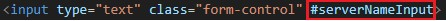
A local referencet bárhol lehet használni, de csak a templaten belül, a TS fájlokban nem!
A local reference típusa templaten belül Element!
Ahhoz, hogy tudjuk használni TS fájlban, úgy a local referencet meg kell adni a komponensosztályban, elé kell írni a @ViewChild() dekorátort.
@ViewChild({loc. ref.}, {static: true}) {loc. ref.}
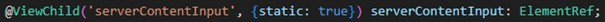
Ennek a típusa ElementRef lesz! Ezt és a ViewChildot is importálni kell a core-ból!
Input elemek értékeit a value metódussal tudjuk felhasználni.
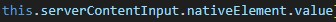
Ha valami contentet teszünk a komponenshez tartozó tagek közé, akkor azt tapasztaljuk, hogy a tárolt értékek elvesznek. Hibát nem kapunk, viszont az Angular nem törődik azzal, hogy ilyen tagek között megőrizze a változók értékeit. Ahhoz, hogy ez ne így legyen, úgy a komponenshez tartozó html fájlban meg kell adni az <ng-content></ng-content> tag párokat. Ez is directive, viszont a többivel ellentétben ezt tagként adjuk meg.
Komponensek - Course Project rövid összefoglaló
- Ha több szinttel lejjebb található gyerektől szeretnénk adatot begyűjteni, akkor többször kell használni az EventEmittert, hogy feljusson az adat ahhoz a szülő komponenshez, ahová el szeretnénk juttatni az adatot.
- Ha valami speciális szöveget szeretnénk megjeleníttetni, például kezdetekben, akkor használjuk az ng-template taget.
Directives deep dive
Ha dinamikusan szeretnénk szerkezetet vagy attribútumot változtatni, akkor használjuk!
Attribute directives - úgy viselkednek, mint a HTML attribútumok. Csak azokat a HTML elemeket módosítják, amihez hozzáadjuk őket. Ilyen az ngClass és az ngStyle.
Structural directives - úgy néz ki, mint egy HTML attribútum, de van egy csillag a nevük előtt. Ezek a directivek a DOM-ot változtatják. Ilyen az ngIf és az ngFor.
Saját directive létrehozása:
- Külön mappa egy sokatmondó névvel
- {név}.directive.ts létrehozása a mappán belül
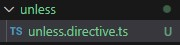 - Adjuk meg a @Directive dekorátort, amit importálni kell a @angular/core-ból!
- A dekorátoron belül a következőket kell megadni:
- selector: milyen néven tudjuk elérni a directivet.
- Létrehozzuk az osztályt és exportáljuk (export class {név} implements OnInit)
- Az osztályon belülre kell egy constructor, zárójelen belülre azt kell írni, hogy private elementRef: ElementRef (amit importálni kell szintén)
- Kell egy ngOnInit(), amibe azt kell írni, hogy this.elementRef.nativeElement.style és ezután hogy melyik propertyt szeretnénk változtatni és ennek milyen értéket szeretnénk adni.
- Az app.module.ts-ben a declarations-nél meg kell adni a directiveünket (és importáljuk is!), hisz alapesetben az Angular nem szkenneli be az összef fájlt.
- Ezután az általunk megadott selectort adjuk meg a HTML tagnek attribútumként.

Vagy létrehozhatjuk terminálon keresztül: ng g d {directive-név}. Ekkor az 1-4. illetve a 6. kimarad, viszont tegyük külön mappába a directivet, amit alapból nem tesz meg az Angular terminálos telepítés során. Ebben az esetben az importálás is változik (lásd 6. pont).
Ha kicsit fejlettebben szeretnénk megvalósítani, akkor a constructorhoz adjunk hozzá egy private renderert, aminek a típusa Renderer2 lesz (importálni!). Az ngOnInit-en belül meg kell adni azt, hogy this.renderer.setStyle(), és a zárójelen belül három paramétert:
- az elemet, aminek a stílusát módosítanánk (leggyakrabban this.elRef.nativeElement)
- a CSS propertyt (itt nincs camelCase)
- a property új értékét
@HostListener dekorátorral különböző eventeket tudunk rendelni a directivehez.
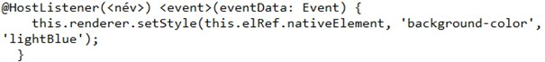
Nem csak a rendererrel lehet változtatni a stíluson. A másik módszerhez szükségünk van a @HostBinding dekorátorra
@HostBinding({amit változtatni akarunk}) {név}
Pl.: @HostBinding('.style.backgroundColor') backgroundColor
Ezek után elég azt megadni a HostListenerben, hogy this.backgroundColor = {valami}.
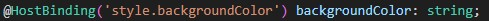
NgSwitch
Egy directive, amit switch-case esetén használunk.
A különböző értékekhez *ngSwitchCaset kell megadni, a default értékhez pedig *ngSwitchDefault-ot.
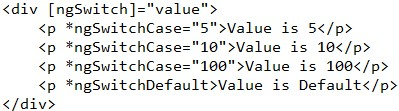
Services & Dependency Injection
Akkor használjuk, ha bizonyos osztályokat újra fel szeretnénk használni!
Dokumentáció: [Angular]
Service létrehozása általánosan:
- Létrehozunk egy valami.service.ts fájlt.
- Ebben a fájlban létrehozunk egy osztályt, amit exportálunk. Ebben vannak változók és metódusok, amiket később újra lehet használni.
- Ahol szeretnénk használni a servicet, ott kell providolni (lásd lejjebb a hiearchical injectionnél)
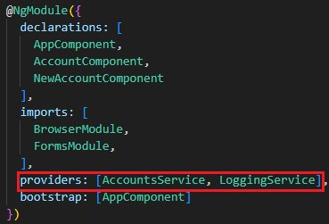 - Komponensbe úgy tudjuk injektálni a szervert, hogy létrehozunk egy constructort, aminek a paramétere egy private, a service nevével megegyező típusú lesz (amit importálni kell).
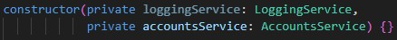 - Ha az adatokat be szeretnénk olvastatni, mert például tömbben tároljuk azokat, akkor szükség van az OnInitre. (... implements OnInit +NgOnInit())
- Ha servicet szeretnénk másikba injektálni, akkor a metódus ugyanaz, mint a 4. pontban, viszont mindkét servicenél kell az @Injectable() dekorátor, amit importálni kell.
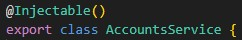
Alább egy példa:
Logging service létrehozása - egy eszköz, amivel konzolra íratást tudunk megvalósítani.
- Az app mappán belül logging.service.ts.
- Létrehozni és exportálni egy osztályt, a név mindegy (de a legjobb a LoggingService)
- Osztályon belül egy metódus létrehozása, ami a konzolon megjelenítendő szöveget tartalmazza.
- Azon a komponensen belül, ahol szeretnénk használni a LoggingService-t:
- A @Componenthez hozzá kell adni azt, hogy providers: [LoggingService]
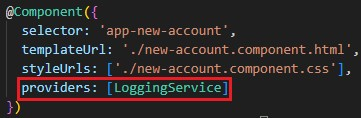 - Létre kell hozni egy constructort: constructor(private loggingService: LoggingService) {}
- És a megfelelő helyen meg kell hívni a konzolra kiíratást: this.loggingService.logStatusChange(accountStatus);
A Data servicet hasonlóan hozzuk létre. Ott az osztályban a kezdeti adatokat és az osztályhoz tartozó metódusokat adjuk meg.
Hierarchical injection
- AppModule - ha az appModuleban providoljuk a servicet, akkor az egész appon belül elérhető lesz a service ugyanazon változata
- AppComponent - ha az appComponentben providoljuk a servicet, akkor az összes komponensben elérhető lesz a service ugyanazon változata
- Bármely más komponens - ha bármely más komponensben providoljuk a servicet, akkor az adott komponensben és a gyerek komponenseiben lesz elérhető a service ugyanazon változata
Tehát:
A logging servicet csak a gyerek komponensekben providoltuk, így ezek egymástól függetlenül mennek -> nem lesz bug
A data servicet viszont az AppComponentben providoltuk, éppen ezért, ha a két másik komponensben is providoljuk, akkor hibát kapunk -> tehát elég csak az AppComponentben providolni a servicet, mert ugyanazt a változatát használjuk a servicenek a gyerek komponensekben is.
Ha több servicet szeretnénk egymásba építeni, akkor minden servicenél meg kell adni az @Injectable() dekorátort.
Routing
A weboldalunkat különböző útvonalakkal tudjuk bővíteni, amik más-más komponenst jelenítenek meg anélkül, hogy az adott oldalt frissítené/újratöltené.
Routing létrehozása:
- app.module.ts-ben egy konstanst létre kell hozni appRoutes néven, aminek típusa Routes, amit importálni kell az @angular/routerről.
- Ez az appRoutes egy tömb és objektumokat tartalmaz, amiknek 2 paramétert kell megadni:
- path: az útvonal, amivel elérjük az adott részt (/ nélkül)
- component: amelyik komponensnek meg kell jelennie, ha azt az útvonalat adjuk meg
- Importsnál megadni: RouterModule.forRoot(appRoutes) -> RouterModule-t importálni
- router-outlet directive megadása a komponens html fájlában oda, ahol szeretnénk, hogy a komponensek betöltődjenek.
- Az anchor tagek href-je automatikusan újrafrissíti az oldalt, ami az adatok elvesztéséhez vezet. Ennek elkerülésére használjuk az Angular routerLink attribútumát, ami ugyanúgy működik, mint a href, csak nem tölti be újra az oldalt.
Relative path: amikor az útvonalat / nélkül adjuk meg. Ilyenkor az Angular megpróbálja kiegészíteni az útvonalat az általunk megadottakkal. Ami gyakran errorhoz vezethet.
Absolute path: amikor az útvonalat /-rel adjuk meg. Ilyenkor az alapútvonalat egészíti ki az általunk megadottakkal.
Ha az útvonalban azt adjuk meg, hogy "../valami", akkor egy szinttel feljebb lépünk.
Aktív routerLinkhez osztály hozzáadás: routerLinkActive="valami".
De ezzel vigyázni kell. Mert minden olyan tagre alkalmazza az osztályt, ami részben vagy teljesen szerepel az adott útvonalban. Tehát pl. a homepage mindig megkapja az osztályt, mert a homepage útvonala részben megegyezik bármelyik komponens útvonalával.
Ahhoz, hogy ezt elkerüljük, meg kell adni még a [routerLinkActiveOptions] property bindingot, amelynek értéke egy objektum lesz, amivel például ki tudjuk azt fejezni, hogy a teljes útvonalat vegye csak-e figyelembe az osztály hozzáadásakor, vagy csak a részútvonalat. (Ha exact: true, akkor a teljes útvonalat veszi figyelembe).
[routerLinkActiveOptions]="{exact: true}"
Ahhoz, hogy egy gombra rányomva egy adott "oldalra" jussunk, létre kell hozni egy gombot, amihez hozzárendelünk egy eventet. A komponensnél a constructorba beinjektáljuk a routert (private router: Router), majd az eventhez tartozó metódushoz a következőt adjuk meg: this.router.navigate(['/servers']); (ahol a /servers egy absolute path és természetesen a servers módosítható).
Ha relative pathot adunk meg, akkor érdemes tudni: maga a navigate nem tudja, hogy épp hol állunk a weboldalon, így ha relative pathot adunk meg, akkor automatikusan a rootot egészíti ki az általunk megadott útvonallal. Ezt elkerülve meg kell adni egy JS objektumot, aminek az egyik paramétere relativeTo és aminek értéke this.route. Ehhez injektáljunk egy routeot, aminek típusa ActivatedRoute lesz (ami tudja azt, hogy épp hol állunk a weboldalon belül) és amit szintén importálni kell a @angular/routerből.
Útvonalakat dinamikusan úgyis tudunk megadni, ha az útvonalakat bizonyos paraméterekkel bővítünk. Ehhez :-ot kell használni, például: path: 'users/:id', component: UserComponent.
De hogyan tudjuk a megfelelő komponenst elérni?
- A megfelelő komponens constructorába injektáljuk be a route-ot, ami ActivatedRoute típusú.
- this.route.snapshot.params['id'] segítségével tudunk paramétert kinyerni az URL-ből. A [] közé olyan értéket adjunk, amilyen nevet adtunk a paraméternek az útvonalmegadásánál az app.module.ts-ben!
Arra kell figyelni, hogyha mondjuk updateljük az URL-t routerLinkkel, viszont nem hagyjuk el azt a komponenst, akkor az adatok nem fognak frissülni, ugyanis ezt az Angular érzékeli és nem érti, miért kell frissítenie az adatokat, ha nem hagyjuk el az adott komponenst.
Az adatok frissítéséhez ezt kell megadni az ngOnInit()-en belül:
(Természetesen a megfelelő paraméterek megadásával).
Mivel a subscribe az app bezárása után is megmarad a memóriában, így az OnDestroy segítségével "el kell pusztítani", miután bezártuk az appot.
Ezt kell megadni a komponens fájlban akkor is, amikor dinamikusan szeretnénk url-t csatolni az anchor taghez!
Anchor tagen belül:
[queryParams]={} - ? az URL-ben
fragment="" - # az URL-ben
A navigate metóduson belül pedig: this.router.navigate(['/servers', id, 'edit'], {queryParams: {allowEdit: '1'}, fragment: "loading"});
Ha azt szeretnénk, hogy több komponens is megjelenjen az oldalon, akkor beágyazott linkeket kell létrehozni az app.module.ts-ben, amit úgy tehetünk meg, hogy ahhoz az útvonalhoz (ami több komponens része) tartozó JS objektumot kibővítjük egy children propertyvel, ide tömbösítve megadjuk az abból kiinduló útvonalakat. Viszont kezdetben a router-outletet csak az app html-jében adtuk meg, ami csak az app utáni követező szinten lévő linkeket ismeri fel. Tehát, hogy ne kapjunk errort, az összes olyan komponens HTML-jéhez hozzá kell adni a router-outletet, amihez hozzáadtunk gyerekútvonalakat.
Ahhoz hogy a query parametereket megtartsuk, hozzá kell adni a navigate metódus JS objektumához a queryParamsHandling propertyt. Két értéket lehet neki adni: a merget és a preservet. Ha meg szeretnénk tartani a query paramétereket, a preserve értéket kell megadni.
this.router.navigate(['edit'], {relativeTo: this.route, queryParamsHandling: 'preserve'});
Wildcard route: '**'. Célszerű csinálni egy page not found komponenst, arra írni egy útvonalat és a wildcard routeot átirányítani arra a komponensre és útvonalra, ami a hibás oldalért felel.
Célszerű a routingot új moduleba kimenteni (pl. app-routing.module.ts), hogy könnyebben olvashatóbbak legyenek a kódok. A module ugyanúgy néz ki, mint a gyári app.module.ts, arra kell figyelni, hogy az NgModuleon belül ezeket adjuk meg:
A komponenseket nem kell importálni, azokat már megtettük a fő moduleban.
Az app.module.ts-ben az imports-on belül adjuk meg a moduleunk nevét, ahogy az export classnál elneveztük.
Guarding
CanActivate dokumentáció: [Angular]
Beállíthatjuk, hogy a weboldal mely komponenseit lehet elérni és melyiket nem, illetve ehhez tudunk feltételeket szabni. Ehhez két service kell: AuthService és AuthGuard. Az AuthGuardhoz implementálni kell a CanActivate interfacet. Majd ezt kell megadni:
Ezt a guardot hozzá kell adni az útvonalhoz tartozó JS objektumhoz: canActivate: [AuthGuard], illetve mindkét servicet hozzá kell adni az app.module.ts-ben.
Ha az útvonal gyerekét szeretnénk védeni, akkor a canActivateChild propertyt kell megadni.
Statikus szöveg útvonalhoz megadása: data: {message: ""}